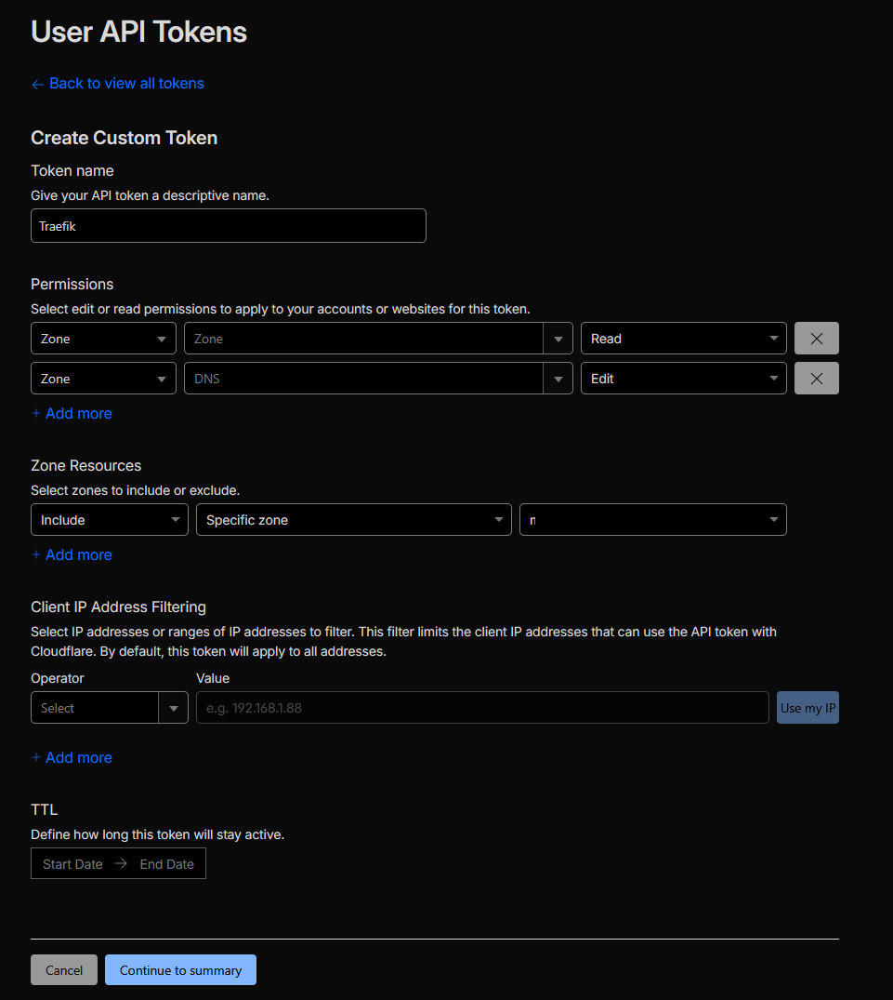

Traefik Reverse Proxy with Cloudflare SSL
This guide covers setting up Traefik v3 as a reverse proxy in a Docker LXC Debian container. This deployment utilizes the Cloudflare DNS-01 challenge, allowing you to generate valid Let's Encrypt wildcard SSL certificates without exposing port 80 to the public internet.
Infrastructure Note
This setup is deployed on a standard Debian LXC container running Docker, cloned from a base template.
Prerequisites
- A registered domain name.
- Domain DNS managed by Cloudflare.
1. Prepare Cloudflare API Token
Traefik needs to communicate with Cloudflare to verify domain ownership. We need to generate a scoped API token for this.
- Log in to Cloudflare and navigate to My Profile > API Tokens.
- Create a new Custom Token with the necessary DNS edit permissions:

Secure Your Token
Once generated, copy your API key into a secure password manager immediately. Cloudflare will only display this token once.
2. System Preparation & Secrets
First, install the necessary utilities, create the Docker network, and set up the directory structure.
Install Apache Utils (Required for password generation):
Create the Docker Network: Traefik needs an external Docker network to route traffic to other containers.
Set up Directories and Secrets:
mkdir -p traefik/data
cd traefik
# Save your Cloudflare API token
nano cf_api_token.txt
# (Paste your token, save, and exit)
3. Generate Dashboard Credentials
To secure the Traefik dashboard, we need to generate basic HTTP authentication credentials.
Replace <USERNAME> with your desired admin username and run the following command. It will prompt you for a password and format it correctly for Docker Compose:
Copy the output string. Now, create your environment variables file:
Paste your generated credentials into the file like this:
4. Traefik Configuration Files
Traefik relies on two main configuration files: a static config (traefik.yml) and a dynamic config (config.yml). We also need to create an empty, secured file for the SSL certificates.
SSL Certificate Storage
Create the acme.json file and lock down its permissions. Traefik will refuse to start if this file is too open.
Static Configuration
Create the traefik.yml file. Be sure to replace <YOUR_CLOUDFLARE_EMAIL> with your actual account email.
api:
dashboard: true
disableDashboardAd: true
debug: true
entryPoints:
http:
address: ":80"
http:
redirections:
entryPoint:
to: https
scheme: https
https:
address: ":443"
serversTransport:
insecureSkipVerify: true
providers:
docker:
endpoint: "unix:///var/run/docker.sock"
exposedByDefault: false
file:
filename: /config.yml
certificatesResolvers:
cloudflare:
acme:
email: <YOUR_CLOUDFLARE_EMAIL>
storage: acme.json
caServer: https://acme-v02.api.letsencrypt.org/directory # prod (default)
# caServer: https://acme-staging-v02.api.letsencrypt.org/directory # test
dnsChallenge:
provider: cloudflare
# disablePropagationCheck: true
# delayBeforeCheck: 60s
resolvers:
- "1.1.1.1:53"
- "1.0.0.1:53"
Dynamic Configuration (External Routes)
Create the config.yml file. This file defines external routes to services not running in Docker (e.g., TrueNAS, Proxmox GUI). To add more services later, just copy and paste the router/service blocks.
http:
#region routers
routers:
<NAME>:
entryPoints:
- "https"
rule: "Host(`<SUBDOMAIN_NAME>.<YOUR_DOMAIN>`)"
middlewares:
- default-headers
- https-redirectscheme
tls: {}
service: <SERVICE_NAME>
#endregion
#region services
services:
<SERVICE_NAME>:
loadBalancer:
servers:
- url: "https://<IP_WITH_PORT>"
passHostHeader: true
#endregion
middlewares:
https-redirectscheme:
redirectScheme:
scheme: https
permanent: true
default-headers:
headers:
frameDeny: true # set to false to enable embedding
browserXssFilter: true
contentTypeNosniff: true
forceSTSHeader: true
stsIncludeSubdomains: true
stsPreload: true
stsSeconds: 15552000
customFrameOptionsValue: SAMEORIGIN # set "ALLOW-FROM https://<BASE_URL>" to enable embedding
customRequestHeaders:
X-Forwarded-Proto: https
default-whitelist:
ipAllowList:
sourceRange:
- "10.0.0.0/8"
- "192.168.0.0/16"
- "172.16.0.0/12"
secured:
chain:
middlewares:
- default-whitelist
- default-headers
5. Docker Compose Deployment
Finally, create the Docker Compose file to tie everything together. Remember to replace <YOUR_DOMAIN> with your actual domain name.
services:
traefik:
image: traefik:v3
container_name: traefik
restart: unless-stopped
security_opt:
- no-new-privileges:true
networks:
- proxy
ports:
- 80:80
- 443:443
# - 443:443/tcp # Uncomment if you want HTTP3
# - 443:443/udp # Uncomment if you want HTTP3
environment:
CF_DNS_API_TOKEN_FILE: /run/secrets/cf_api_token
TRAEFIK_DASHBOARD_CREDENTIALS: ${TRAEFIK_DASHBOARD_CREDENTIALS}
secrets:
- cf_api_token
env_file: .env
volumes:
- /etc/localtime:/etc/localtime:ro
- /var/run/docker.sock:/var/run/docker.sock:ro
- ./data/traefik.yml:/traefik.yml:ro
- ./data/acme.json:/acme.json
- ./data/config.yml:/config.yml:ro
labels:
- "traefik.enable=true"
- "traefik.http.routers.traefik.entrypoints=http"
- "traefik.http.routers.traefik.rule=Host(`traefik-dashboard.<YOUR_DOMAIN>`)"
- "traefik.http.middlewares.traefik-auth.basicauth.users=${TRAEFIK_DASHBOARD_CREDENTIALS}"
- "traefik.http.middlewares.traefik-https-redirect.redirectscheme.scheme=https"
- "traefik.http.middlewares.sslheader.headers.customrequestheaders.X-Forwarded-Proto=https"
- "traefik.http.routers.traefik.middlewares=traefik-https-redirect"
- "traefik.http.routers.traefik-secure.entrypoints=https"
- "traefik.http.routers.traefik-secure.rule=Host(`traefik-dashboard.<YOUR_DOMAIN>`)"
- "traefik.http.routers.traefik-secure.middlewares=traefik-auth"
- "traefik.http.routers.traefik-secure.tls=true"
- "traefik.http.routers.traefik-secure.tls.certresolver=cloudflare"
- "traefik.http.routers.traefik-secure.tls.domains[0].main=<YOUR_DOMAIN>"
- "traefik.http.routers.traefik-secure.tls.domains[0].sans=*.<YOUR_DOMAIN>"
- "traefik.http.routers.traefik-secure.service=api@internal"
secrets:
cf_api_token:
file: ./cf_api_token.txt
networks:
proxy:
external: true
6. Launch Traefik
Spin up the container in detached mode:
Next Step: DNS Records
Now that Traefik is running, log into your local DNS server (e.g., Pi-hole, AdGuard, or your router) and create a DNS rewrite to point traefik-dashboard.<YOUR_DOMAIN> and all future subdomains to the IP address of your Traefik LXC container.